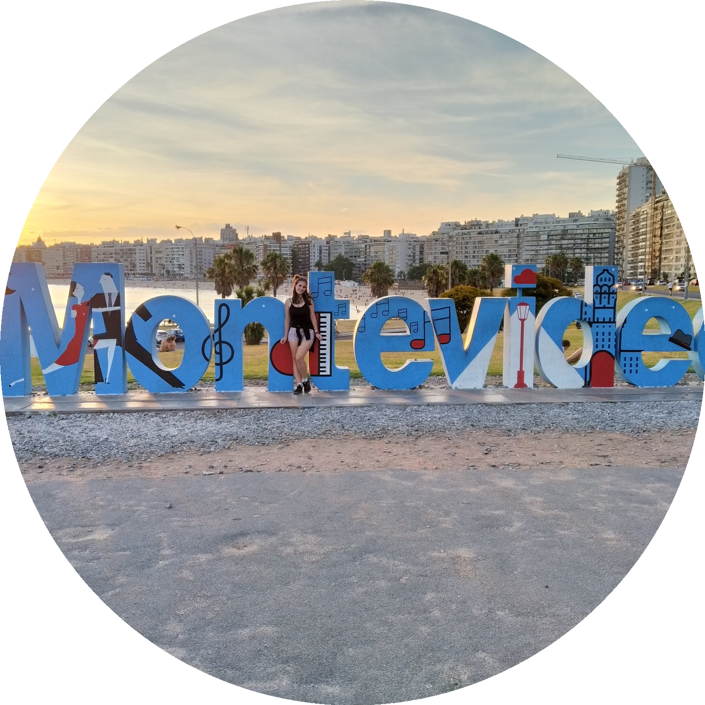

Hi, my name is Paula, I am 21 years old and I am a information systems student (UTFPR 2017-2020), logistics technician (SENAI 2015-2016), amator actress (2014-2018), big fan of cats and a lover of world and its connections (since always).

Description.
Check it out!
Description.
Check it out!